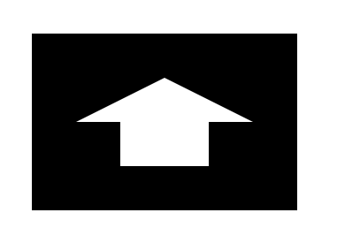
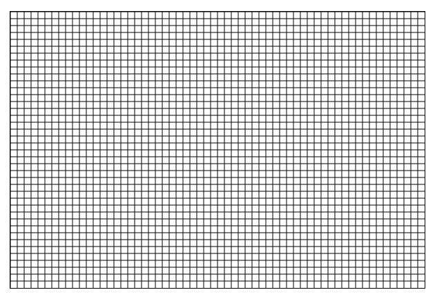

Canvas第1天
预习任务
前置知识点复习
构造函数
继承的方式
数组的迭代方法
预习笔记阅读
请下载预习笔记： Canvas第一天
学习目标与要求
| 编号 | 目标 | 重点 | 难点 |
|---|---|---|---|
| 1. | Canvas入门 | √ | |
| ☞a | 解释canvas标记的作用 | √ | |
| ☞b | 解释计算机直角坐标系 | √ | |
| ☞c | 写出获取绘图上下文的方法 | √ | √ |
| ☞d | 描述路径的概念 | √ | √ |
| ☞e | 使用canvas属性设置画布大小 | √ | |
| ☞f | 使用moveTo方法设置路径起点 | √ | |
| ☞g | 使用lineTo方法画路径 | √ | |
| ☞h | 使用stroke方法根据路径描边 | √ | |
| ☞i | 绘制矩形、三角形或其他由线条构成的基本图形 | √ | |
| 2. | 绘制不同色彩的图形 | √ | √ |
| ☞a | 使用strokeStyle属性设置描边色 | √ | |
| ☞b | 使用beginPath方法开辟新路径，防止重绘之前的路径 | √ | √ |
| ☞c | 使用clonePath方法闭合路径 | √ | |
| ☞d | 封装绘制图形的函数 | √ | |
| ☞e | 改为面向对象的方式封装 | √ | √ |
| 3. | 填充与非零环绕原则 | √ | √ |
| ☞a | 使用fill方法根据路径填充图形 | √ | |
| ☞b | 使用fillStyle属性设置填充色 | √ | |
| ☞c | 描述非零环绕原则 | √ | √ |
| 4. | 线条相关属性介绍 | ||
| ☞a | 使用lineWidth属性设置线宽 | √ | |
| ☞b | 使用lineCap属性设置线帽样式 | ||
| ☞c | 使用lineJoin属性设置两线交点样式 | ||
| ☞d | 虚线绘制 | ||
| 5. | 案例 | √ | √ |
| ☞a | 自定义坐标轴绘制 | √ | |
| ☞b | 在自定义的坐标轴中指定位置画点 | √ | √ |
| ☞c | 根据数据动态绘制折线图 | √ | √ |
| ☞d | 等比缩放折线图 | √ |
练习任务
【复习】复习今日内容
【总结】总结今日内容整理成思维导图
思考任务（课后练习）
使用面向对象的方式绘制图形，要求可以设置线宽，描边色和填充色
利用非零环绕原则画如下图形
绘制网格
完成折线图案例
博学谷每日测评
登陆博学谷系统进行每日测评。
其他任务
熟悉每日英文单词
| 英文 | 中文 | 音标 |
|---|---|---|
| canvas | 帆布; 油画（布）; | 英 ['kænvəs] |
| context | 语境; 上下文; 背景; 环境; | 英 [ˈkɒntekst] |
| stroke | 中风；冲程；笔画；打击；尝试；轻抚 | 英 [strəʊk] |
| begin | 开始; 着手; 创始; 创办; | 英 [bɪˈgɪn] |
| close | 关; 关闭; 结束; 使靠近; | 英 [kləʊz] |
| fill | 装满，使充满；满足；堵塞；任职 | 英 [fɪl] |
| cap | 盖; 帽子; 军帽; 求交运算; | 英 [kæp] |